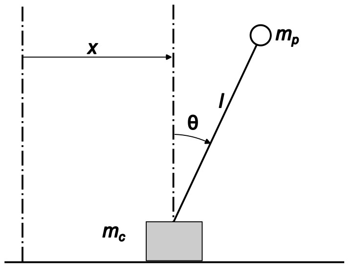

Cart pendulum Part 1: Lagrangian mechanics
 Image credit: Rohit K John
Image credit: Rohit K John
Introduction
A cart pendulum is a device consisting of a movable cart with a pendulum attached to it. In this article, I am going to discuss the dynamics of one such device. The cart would be constrained to move only along a s straight line such that it lies in the pendulum’s plane of motion. This is illustrated in the cover picture.
The dynamics would be described by a set of differential equations and these equations would be derived using two formulations of mechanics: Lagrangian dynamics and Hamiltonian dynamics. I omit deriving these equations using Newton’s second law because it is very tedious and increasing the chances of mistakes sneaking in. Along with theory, a jupyter notebook would be provided with necessary code to derive these equations symbolically in python link.
System setup

Verification
Before we go any further, we need to device some tests to verify whether the model we get represents the cart pendulum. It is always wise to have ways to test the answer before we get it. Doing this step beforehand ensures we are not biased by the answers. The following tests may not necessarily prove the correctness of the answer, but serves to indicate whether the solution is wrong. In other words, if the solution fails these tests, then the solution is wrong.
Test 1
When the mass of the pendulum is very small compared to the cart, or when $m_p \ll m_c \rightarrow m_p / m_c \approx 0$, we should be able to recover the dynamics of a simple pendulum
Test 2
In this system, the cart-pendulum experiences no horizontal force, unless a control force acts on it. In this article, the control input is 0. So the horizontal position of the centre of mass of the system should remain at rest or uniform motion.
Lagrangian Mechanics
Lagrangian Mechanics is a formulation of mechanics which uses the principle of least action [1]. Action is defined in terms of a quantity called the lagrangian (represented using $L$). The Lagrangian $L$ is defined as $L = T - V$ where $T$ is the kinetic energy of the system and $V$ is the potential energy of the system. Please visit [2] for a deep discussion on the Lagrangian Formalism.
Setting up the Lagrangian
The quantities $L$, $T$ and $V$ are functions of the generalised states (the generalised positions $\textbf{q}$ and velocities $\dot{\textbf{q}}$) and time $t$. In our case the generalised positions are $x$ and $\theta$, while the generalised velocities are $\dot{x}$ and $\dot{\theta}$. Let use now express these quantities in terms of the state variables.
Position of the cart
$(x,0)$
Velocity of the cart
$(\dot{x}, 0)$
Kinetic energy of the cart
$\cfrac{1}{2}m_c\dot{x}^2$
Potential energy of the cart
0
Position of the pendulum
$(x + l\sin(\theta), l\cos(\theta))$
Velocity of the pendulum
$(\dot{x} + \dot{\theta}l\cos(\theta), -\dot{\theta}l\sin(\theta))$
Kinetic energy of the pendulum
$\cfrac{1}{2}m_p((\dot{x} + \dot{\theta}l\cos(\theta))^2 + (-\dot{\theta}l\sin(\theta)^2))$
$\cfrac{1}{2}m_p(\dot{x}^2 + 2\dot{x}\dot{\theta}l\cos(\theta) + (\dot{\theta}l)^2)$
Potential energy of the pendulum
$-m_pgl\cos(\theta)$
Total kinetic energy, $T$
$\cfrac{1}{2}m_c\dot{x}^2 + \cfrac{1}{2}m_p(\dot{x}^2 + 2\dot{x}\dot{\theta}l\cos(\theta) + (\dot{\theta}l)^2)$
Total potential energy, $V$
$-m_pgl\cos(\theta)$
The Lagrangian, $L$
$\cfrac{1}{2}m_c\dot{x}^2 + \cfrac{1}{2}m_p(\dot{x}^2 + 2\dot{x}\dot{\theta}l\cos(\theta) + (\dot{\theta}l)^2) + m_pgl\cos(\theta)$
Dynamical equations
The dynamical equations are derived using the Euler–Lagrange equation [1]. It is shown below
Now these equations form a system of second order differential equations which describe the dynamics of the cart-pendulum. These become more useful when we solve for $\ddot{x}$ and $\ddot{\theta}$. One, we can study the acceleration of the centre of mass and two, with some additional modification we can numerically integrate them. So, solving these equations for $\ddot{x}$ and $\ddot{x}$ yields
Verifying: test 1
Divide the numerator and denominator with $m_c$ so we can use $m_p / m_c \approx 0$. This leads to the following
We can see that the equations we derived pass this test. When the mass of the pendulum is negligible compared ot the cart, the cart acceleration is 0, it remains in place and the pendulum behaves like a simple pendulum.
Verifying: test 2
Before we proceed, we need to find the expression for the centre of mass, specifically the x component
Center of mass position, x
$(m_c x_c + m_p x_p)/(m_c + m_p)$
Differntiating this twice with time yields
You will notice that the numerator is one of the equations we get after plugging in the Lagrangian in the Euler-Lagrange equation. So this evaluate to 0, passing our test.
Why did this happen? Physically, no horizontal force acts on the system. In terms of the Lagrangian mechanics, we can explain this as follows. The Lagrangian is independent of $x$, so differentiaing it with respect to $x$ yields 0. In other words
Plugging this in the Euler-Lagrange equation we get
This implies, the quantity $\frac{\partial L}{\partial \dot{x}}$ is a constant of the system. In the next article, regarding Hamiltonian dynamics, we will see that this quantity is called generalised momentum conjugate to $x$.
Conclusion
This article gave a brief discussion on deriving the dynamics of a cart-pendulum using the Lagrangian formulation. The code I used to derive the equations are given in this link link. In the next article we will explore the use of the Hamiltonian framework to derive the governing equations.
Reference
[1] Wikipedia: Lagrangian mechanics [2] Classical Mechanics: Lagrangian formalism, V Balakrishnan
Rohit K. John
Roboticist | Researcher |
Creative Designer
Elevating ideas from concept to reality through design, analysis, construction, and constant improvement